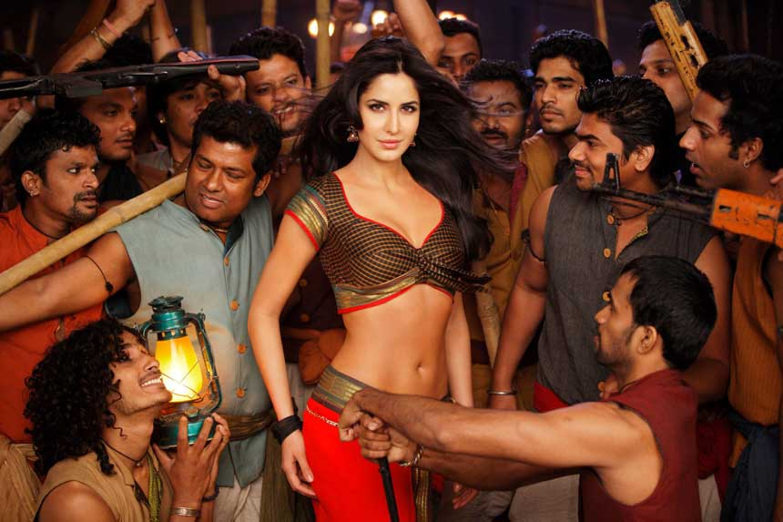
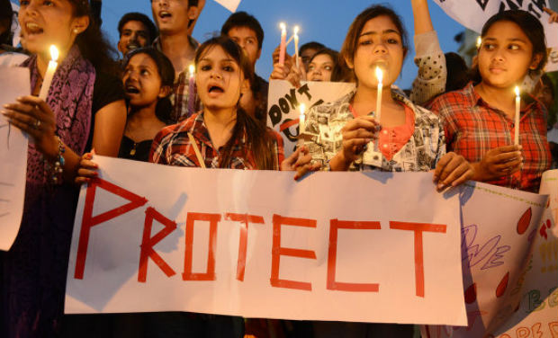

“You don’t get it.”
I think to myself as I see my Indian-American peers rave about their love for Indian culture.
Their deep adoration for Bollywood, for colorful Indian fashion, for stunning religious iconography.
“Bollywood is so colorful and gorgeous! Indian culture must be beautiful."
"I love going to India! Seeing family and traveling are what I look forward to every summer!"
"You should enjoy your time in India! You’re so lucky! It can't be all that bad."
I agree, India is a wonderful place for those who can afford its temporary, consumerist pleasures. India has a rich
history and culture for the privileged. For those strong enough to handle India's unbearably judgmental social culture or
lucky enough to escape it, may the country unveil its beauty.
But India’s daughters
face a much different landscape,
from individual brutal instances of assault to being failed by Indian society itself.
“You don’t get it.”
I think to myself As I hear my Indian-American friend talk about Priyanka Chopra’s beautiful dress or about Kajal Agarwal’s
stunning makeup. Beneath the gold dresses and glittery eyelids, it is difficult to see the true plight of Indian women.

There is no sin in enjoying Indian culture and respecting Indian customs, the true toxicity comes into play when,
in our enthusiasm for the glitz and glam of Bollywood and Indian pop culture, we forget the very real difficulties faced
by Indian women.
India is the most dangerous country in the world for women. This is a fact that shocks most if not all of my Indian
American peers, and a testament to how out of touch we are from the problems facing our own homeland.
“You don’t get it.”
I think to myself as I watch a heroine being draped in a sari. As I watch her refuse the hero’s advances,
only to have him persist and completely ignore her bodily autonomy. This is sexual harassment. I shudder as I
realize the sexist messages this all too familiar plot line pushes into the mainstream Indian psyche.
Popular Tollywood films from classics such as Gundamma Katha,
a tale in which a woman is financially manipulated by her husband and still cohabitates with him to be socially compliant,
Coolie No.1, a story of a woman woman who is
“tamed” of her “arrogant” nature through multiple heinous acts, including being raped by the hero under the authorization
of her own mother to recent releases such as Govindudu Andarivaadele,
in which a woman is blackmailed with revealing pictures of herself to comply with the male protagonist’s wishes all show almost unfathomable and dangerously normal
mistreatment of women. Such depictions of women in Indian film actively contribute to
rape culture and push indian society
significantly backward on the front of gender equality.

Aside from all of heart-wrenching misogyny in popular indian film, the one action that makes me even more vehemently
upset, is the way my mother says “Stop looking so much into things” when I bring up my views during films.
“You don’t get it.”
99%
of rapes and sexual assaults in India go unreported, according to a report by The Livemint. The average conviction rate for crimes that
are reported is a mere 19%.
One third of all pending investigations are cases of crimes against women. The toxic culture of
objectification and denial of bodily autonomy to women in mainstream Indian films only adds to the heinous environment
that India is for women.

For Non-Resident Indians (NRIs) like myself who are in a position of privilege, as the younger generation,
we need to extend hope and change to our sisters in India. No woman should have to literally fear for her life when
she exits her home, no woman should have to live in a world where treating women with gross disrespect is so normal
that it’s in every TV show and every movie. No woman should live in a world without freedom. And we need to ensure that.
As an NRI myself, living in America has proven a vast contrast to what I’ve seen in India. America is by no means
perfect in terms of gender equality, in fact the United States is ranked as the
10th worst country in the world for women.
There is certainly more work that needs to be done on the front of women’s rights and gender equality worldwide,
and an intersectional perspective must be applied when tackling any feminist issue. In my place of privilege, I
have the opportunity to join women’s empowerment organizations, to take women’s studies classes, and to bravely
fight for the rights of women who may be unable to have a voice for themselves, and I hope others in a similar
situation are encouraged to do the same.
I hope now, you get it.